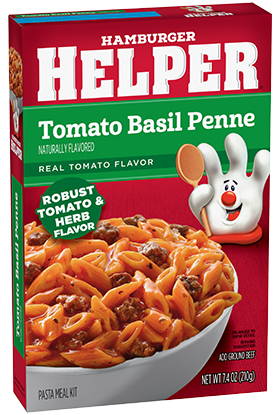

Hamburger Helper - Tomato Basil

Description
America’s favorite Hamburger Helper is Made with Real Basil for the
classic taste you love most. Add Your Own Twist! Make it fancy! Stir in
diced tomatoes and crushed red pepper flakes just before serving. Sprinkle
with chopped basil and shredded Parmesan cheese.
Ingredients
- 1 lb Lean Ground Beef
- 3 cups Water
Steps
-
COOK – Cook ground meat in a 10-inch skillet over medium-high heat 6 to
8 minutes, breaking up and stirring. Drain; return cooked meat to
skillet.
- STIR – Stir in water, Sauce Mix and Pasta. Heat to boiling.
-
SIMMER – Reduce heat. Cover; simmer about 16 minutes, stirring
occasionally, until pasta is tender. If necessary, uncover and cook,
while stirring, an additional 1 to 3 minutes to desired consistency.
Home
Turkey Sandwich
Green Beans and Corn